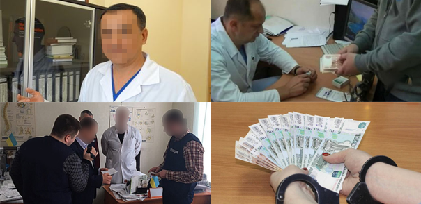
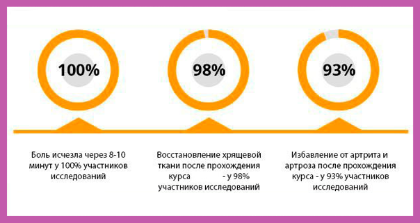
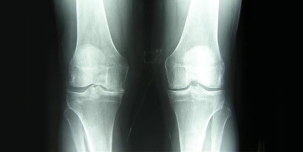
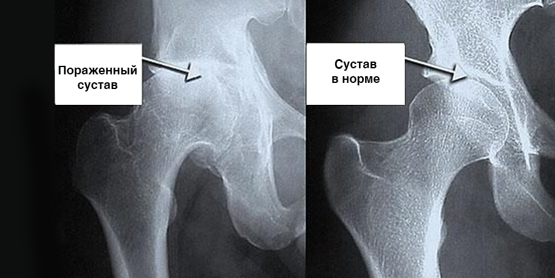
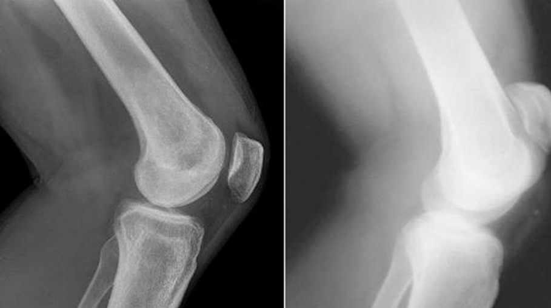
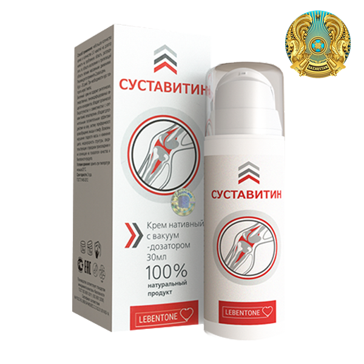

Лечение суставов дорогими пустышками: ревматологи 12 лет обманывают пациентов по всей стране
Внимание!
В конце октября 2019 года начались массовые задержания ревматологов в городе Астане и других крупных городах Казахстана. Всего по данным правоохранительных органов за 3 месяца были помещены под стражу 367 медиков. Среди задержанных как рядовые врачи, так и заведующие ревматологическими и неврологическими отделениями, а также несколько министров.
Причина задержаний, озвученная правоохранительными органами, шокирует. На протяжении 12 лет врачи-ревматологи обманывали людей , выписывая ими бесполезные и дорогие лекарства. Такая практика распространилась по всей стране. Всего, по данным следствия, врачами были обмануты более 1 млн. пациентов на сумму, превышающую 30 млрд. Но самое страшное – многие из пациентов, которым были выписаны дорогие пустышки, в итоге стали инвалидами.
Прокомментировать ситуацию мы попросили ведущего ревматолога страны, ректора Алматинского государственного института,президента Лиги Евразийских ревматологов, профессора, Галымжана Асылбековича.
Тогизбаев Г.А. – один из тех, кто неоднократно просил Прокуратуру провести массовую проверку ревматологов
Аптеки Казахстана буквально забиты бесполезными лекарствами, а действительно эффективных для лечения суставов просто не найти!
Тогизбаев Г.А.
Спросите себя – знаете ли вы таких людей, которые смогли бы вылечить суставы препаратами из аптеки? Может ваши знакомые или друзья? Таких людей нет!
Тогизбаев Г.А.
И еще хотел бы пояснить, почему перечисленные препараты не помогают, чтобы вы до конца поняли всю сложность ситуации. Понимаете, производителям этих «лекарств» просто невыгодно, чтобы люди полностью излечивали суставы. Намного выгоднее продавать те лекарства, которые лишь снимают боли и помогают на время – тогда люди будут приходить за лекарствами снова и снова.
Корреспондент
Почему никто ничего с этим не делает? Ведь это беспредел...
Тогизбаев Г.А.
Да, именно беспредел, но, к счастью, он закончился. Мы неоднократно предупреждали ревматологов о нарушениях, но они не восприняли наши слова всерьез. Ведь очень сложно отказаться от тех денег и того уровня жизни, которые им предлагали производители лекарств-пустышек за их «продвижение». Сейчас ведутся задержания, в том числе известных врачей. К сожалению, на аптеки мы не имеем рычагов воздействия, но этот вопрос сейчас также активно прорабатывается на законодательном уровне. Совсем скоро появятся закон, по которому аптеки будут обязаны согласовывать список реализуемых лекарств. Сейчас пока такого нет.
Корреспондент
Галымжан Асылбекович, вы сказали, что, несмотря на то, что в аптеках продаются бесполезные лекарства, существуют и те, которые действительно помогают лечить суставы. Не могли бы вы назвать хотя бы один такой препарат?
Тогизбаев Г.А.
Да, конечно. Например, очень хорошим препаратом, который позволяет восстанавливать даже сильно разрушенные суставы и устранять боли, является Суставитин , разработанный еще в 2017 году НИИ Ревматологии им В. А. Насоновой. Так как этот препарат отечественный, а само НИИ не занимается коммерческой деятельностью, то стоит он копейки по сравнению с теми, что представлены в аптеках, а помогает в разы лучше!
Хочу показать результаты клинических исследований препарата Суставитин . Они приятно удивили многих врачей. Для тех пациентов, у кого суставы болят часто, он будет настоящим спасением:
Тогизбаев Г.А.
А это снимки суставов «до» и «после» применения препарата Суставитин :
Женщина. 54 года. Сустав полностью восстановился. Срок лечения 1,5 месяца:
Лечение тазобедренного сустава у мужчины. 44 года. Мучительные боли, которые сопровождали пациента в течение 2-х лет, прошли полностью.
Восстановление локтевого сустава. Женщина, 31 год. Срок использования средства Суставитин 2 месяца. Сустав полностью восстановился.
Тогизбаев Г.А.
На фотографиях хорошо видно, что Суставитин не только снимает болевой синдром, но и запускает процессы регенерации синовиальной жидкости – то, что должны делать хондропротекторы. В итоге хрящевая прослойка становится шире и эластичнее – сустав оздоровляется, боли и скованность проходят.
По результатам клинических исследований, а также практики использования, именно Суставитин , по мнению Минздрава Казахстана, считается основным в лечении суставов и позвоночника. И что самое замечательное – им можно лечиться дома. Ведь очень многие люди не хотят идти к врачам. И их в этом можно понять, особенно в свете последних событий. Суставитин помогает восстановить суставы самостоятельно.
Корреспондент
Суставитин – это мазь или таблетки?
Тогизбаев Г.А.
Это специальное средство которое снимает боль, воспаление и останавливает разрушения сустава благодаря специальной формуле. Действующие вещества входящие в состав средства Суставитин воздействует на суставы, систему кровообращения, соединительные ткани, сухожилия. Оказывает противовоспалительное действие, повышает сопротивляемость болезни. Суставитин – это уникальная запатентованная разработка наших ученых. Больше таких препаратов не существует нигде в мире.
Корреспондент
Галымжан Асылбекович, если Суставитин не продается в аптеках, где его можно приобрести?
Тогизбаев Г.А.
Все очень просто, получить Суставитин можно обратившись в НИИ Ревматологии через специальный сайт, на котором Суставитин отдают по себестоимости, делая его по-настоящему социальным лекарством.
Кроме того, сейчас этот препарат реализуется по федеральной программе «Здоровые суставы», а потому препарат раздают бесплатно. Вы, наверное, будете шокированы, но препарат раздается на самом деле бесплатно! Сравните теперь с ценами тех лекарств, которые представлены на аптечных прилавках.
Суставитин восстанавливает суставы даже в глубокой старости, именно поэтому он рекомендован пенсионерам. Также он может использоваться для профилактики проблем с суставами и при травмах.
Получить Суставитин абсолютно БЕСПЛАТНО на официальном сайты до включительно.
Опа сайты сь подделок! Оригинальный препарат " Суставитин " по социальной программе можно получить только на ОФИЦИАЛЬНОМ сайты или заполнив форму ниже.
Комментарии
Индира К. (г.Астана)
Спасибо за статью. Очень интересно. То, что врачи выписывают то, что не помогает – это правда. Я лечу суставы уже 7 лет и никакого особого прогресса!
Дархан Д.
Заказал Суставитин . Не верил, что бесплатно. Но оказалось именно так. Приятно удивлен. Спасибо.
Андрей К.
Избавиться от боли в суставах - мечта моих последних лет. Спасибо, что помогли её осуществить, да ещё и так быстро
Динара Р. Вторник 8.10.2019
Был артрит, сильно болели суставы. Мучилась 2 года. Суставитин убрал боли в коленях и локтевых суставах меньше чем за неделю! Чувствую себя замечательно. Это лучший препарат из всех. Теперь его дома в аптечке держу, как только чувствую боль, сразу использую его, и она уходит мгновенно!
Азамат К. Вторник 8.10.2019
Тоже есть опыт восстановления суставов и тоже положительный. Суставитин использовал чуть больше 10 дней и болезнь прошла. В свое время посоветовал мне этот препарат один знакомый врач.
Аско К. Вторник 8.10.2019
Спасибо! Видел по телевизору сюжет - ужас что творится! Спасибо за информацию о настоящем лекарстве! Заказал через форму заказа , перезвонили через несколько минут на мобильный телефон. Заказ подтвердил, обещали доставить в течение недели. Впервые заказываю через интернет, а всё оказалось так просто!.
Елена Б. Вторник 8.10.2019
Коллега на работе рассказывала об этом средстве. Очень его хвалила.
Кирилл М. Вторник 8.10.2019
Спасибо за рекомендации!
Алия Б. Вторник 8.10.2019
Просто невероятное средство, всем советую, так достали боли в области шеи, подозреваю, что это был остеохондроз. Но после того как начала использовать Суставитин в течении 10 дней стало намного легче и боли ушли. Заказывала на официальном сайты , когда только началась у них программа, сейчас вот еще раз заказала, подруге на день рождения, программа то закончится скоро, хорошо что успела!
Михаил П. Вторник 8.10.2019
С первого дня стало значительно легче. Сейчас уже третий и я чувствую себя просто прекрасно.
Оксана Г. Вторник 8.10.2019
Такая маленькая упаковка, а такое большое облегчение! Почему же я раньше его не использовала?
Наталья Ю. Вторник 8.10.2019
Да, врачи сейчас такие. Только и хотят, что зарабатывать деньги. А ведь все они клятву Гиппократа давали. У меня одна знакомая тоже так лечилась. Болели колени. 2 года лечения, больше 50 тыс. рублей за все отдала. А в итоге – сильное воспаление и ампутация одного сустава. Сейчас инвалид. А муж её успел приобрести Суставитин , и он его спас от этой участи! Спасибо производителю!
Максим П. Вторник 8.10.2019
Работаю таксистом. Сидячий образ жизни просто убил мою спину. Домой я возвращался разбитым. Спасибо вам за то, что вылечили меня всего за неделю. Теперь я выполняю даже больше заказов, чем лучшие сотрудники в таксопарке.
Батима М. Вторник 8.10.2019
Здравствуйте всем! Мне 43 года. У меня лет 10 назад стали сильно опухать суставы кистей пальцев, голеностоп, колен. Боль была жуткая, ночами не спала, плакала от боли. Периодами бывало, вообще ничего не болело, а бывало очень сильно. Недавно по совету знакомой стала использовать Суставитин . Суставы значительно оздоровились. До этого уколы кололи, они так не помогали, как это средство..
Аяна К. Вторник 8.10.2019
Спасибо! Заказала. Суставы больные и у меня, и у мужа. Оба пенсионеры. Будем лечиться. У нас каждая копейка на счету, поэтому очень порадовались, что средство такое недорогое.
Кирилл А. Вторник 8.10.2019
Средство спасло меня от операции!
Галина М. Вторник 8.10.2019
Моя мама вообще не собиралась принимать никаких таблеток, мазей, средств и уж тем более операций, хотя без помощи не могла передвигаться. Я неделю незаметно подкладывала ей в еду это средство и все прошло! Хотя она до сих пор думает, что излечилась сама
Александр М. Вторник 8.10.2019
Подтверждаю! Суставитин очень хороший препарат. Был остеохондроз. После того, как начал использовать Суставитин , прошел, и не дает о себе даже вспоминать, как молодой хожу)
Мария П. Вторник 8.10.2019
Результат просто превзошел мои ожидания. Весь артрит на пальцах рук исчез за 6 дней! Заказала ещё несколько упаковок своим подругам!.
Дарья О. Вторник 8.10.2019
Я думала, что все это никогда не кончится. Боли преследовали меня даже во сне. Средство пришло вчера. Сегодняшняя ночь была самой спокойной за последние годы - никаких болей, отеков. Ничего. Только спокойный сон. Благодарю вас, от всего сердца
Корреспондент
Галымжан Асылбекович, что вообще происходит?
Тогизбаев Г.А. [врач-ревматолог]
Происходит то, что наши правоохранительные органы должны были сделать давно – пересажать всю эту мафию. Вы только вдумайтесь в эти цифры – более 1 млн. покалеченных жизней за 12 лет! Люди, большая часть из которых пенсионеры, обращались к врачам за помощью. А те вместо того, чтобы лечить, наживались на страданиях людей, заведомо зная, что выписанные ими средства не помогут. И такая практика была распространена не только в коммерческих, но и, что страшнее всего – в государственных клиниках.
Корреспондент
О каких именно средствах идет речь?
Тогизбаев Г.А.
Преимущественно зарубежных производителей, за которые врачи выше по рангу получали крупные откаты и в приказном порядке сообщали нижестоящим, что именно выписывать. В свою очередь те получали за это хорошие премии.
Речь идет о таких малоэффективных препаратах, как:
Корреспондент
Но ведь все перечисленные препараты продаются в аптеках по всей стране?
Тогизбаев Г.А.
Да, это именно так. Однако это не означает, что они действительно помогают излечивать суставы. Понимаете, сегодня аптеки – это коммерческие структуры. По сути, обычные магазины. Они продают то, что хорошо продается и приносит прибыль. А перечисленные препараты продаются хорошо как минимум по двум причинам, которые никак не зависят от их эффективности. Во-первых, их выписывают подкупные врачи. Их рекомендуют выписывать даже неподкупным на различных конференциях, спонсорами которых, как правило, и выступают производители данных лекарств. Сейчас все везде продается и ведется агрессивная реклама. Те, врачи, которые не особо вникают – какие именно препараты хорошо помогают, выписывают то, что выписывают другие, и то, что активно продвигается. Во-вторых, у данных препаратов практически нет конкурентов. То есть, по сути, людям больше нечем лечиться. И не потому что эффективных препаратов нет в принципе, они есть, просто они не продаются в аптеках, так как в аптеки их попросту не пускают.